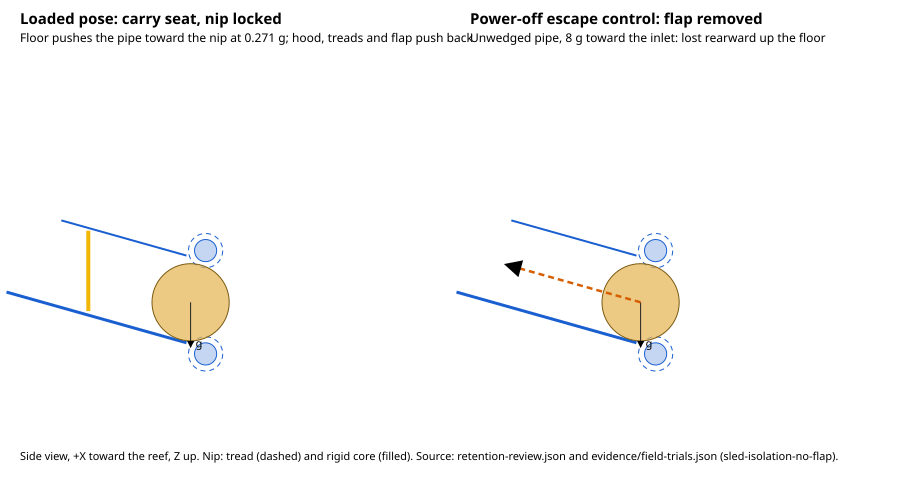

Open the evidence
- Package motion player: solid blocks, cycle cases, collisions, inventory, mass and voltage budgets.
- Field-interaction playback: solved receive, carry-sled and eject trials against the trough, with disabled and isolation controls.
- Retention: loaded pose and power-off escape control

Disposition: selected for preliminary review; bench gates G1-G4 open; the r3 pan package (A) remains the fallback until they pass.
Receipt
Plan sha256 b27f025d8f974185..., STEP sha256 d7af6a7116016e38..., design revision 2.
Open items that keep it from 'layout-checked':
Rules
- R102 / R105 (register id 'extension': 'The starting projection and the 18-inch extension limit refer to the perimeter.'): complies. The deployed lip is the only member beyond the frame perimeter: its tip is 100.0 mm out (the swing passes 109.0 mm momentarily while deploying), inside the register's 18 in (457.2 mm) limit, in one direction. In the starting configuration the lip is folded up with its forward-most point 1.0 mm inside the frame face, so no robot reserve projects beyond the front face, and the start height is 886.7 mm against the register's 42 in (R104, modeled).
- G412 (register id 'launch': 'A launched CORAL requires a bumper partially in its own reef zone.'): open. The nip propels the pipe out of the robot, so this package treats the B'x roll-off as a launch whether or not a roll-off counts as one, and requires an eject interlock: nip forward only when a bumper is partially in our reef zone, a pipe is seated and the lip is deployed. The same interlock covers the B fallback's airborne launch. Compliance cannot be claimed yet: the reef-zone footprint is not registered, no sensor or localisation method that establishes zone overlap is specified, and the seated-pipe and lip-deployed sensors are not placed.
Findings
- PD1 (resolved in this layout): The evaluation's B geometry cannot eject: a 70 mm fence (taller than the 57.15 mm pipe radius) sits below a nip whose throat is 70 mm above the seated pipe centre, so neither roller touches the seated pipe and nothing can lift it over the fence. This package seats the pipe in the bite (throat at the 0.60 m pocket centre): the treads are the front stop and the eject drive.
- PD2 (open (bench)): Receive custody depends on tread stiffness: 40 N/mm per roller seats 16/16; 10 N/mm seats 8/16 (4 pass through the nip, 4 stop in the throat). Bracket over arrivals 2.22-2.47 m/s, e 0.2-0.5, mu 0.15-0.35, tread mu 0.6-1.0.
- PD3 (selected): The self-locking worm earns its place on receive: free rollers seat 3/4 adverse receives, locked 16/16. In the carry sled free rollers from a free-settled seat were retained at 1-8 g, so at 40 N/mm the worm is not needed for G3. The B fallback's back-drivable planetary seats 4/4 adverse receives unpowered and 4/4 in brake mode, but against the 0.5 s G1 timing only 0/4 and 2/4 seat in time (unpowered [0.5345, 0.6331, 0.9756, 0.991] s, brake [0.2992, 0.3021, 0.536, 0.567] s).
- PD4 (selected): The deployed lip earns its place: removed, the 12 V eject is captured at 0 mm (4/4) and 50 mm (4/4) and lost at 75 mm (0/4) and 100 mm (0/4); deployed, 80/80 torque-limited ejects at 9-12 V over 0-100 mm stand-off are captured and supported 2 s after a 120 mm withdrawal, departing at 0.58-0.98 m/s. Imposed nip speeds of 0.40 and 2.0 m/s also capture (3/3, 3/3), so nip speed has no failing value in this range. Ramp angle: 20 deg 3/3, 30 deg (selected) passes, 40 deg 0/3 (stalled in the nip: the steeper ramp lifts the root above the lower tread). Latch-failed control (lip still up): retained on robot: exit blocked by the stowed lip.
- PD5 (open): B fallback (same pocket, no lip, 12:1 planetary) launched closed-loop at 1.235-1.365 m/s from the 0.60 m throat: 0 mm 12/12, 25 mm 12/12, 50 mm 12/12, 75 mm 12/12, 100 mm 0/12. The evaluation screened B at a 0.67 m exit; on this pocket B's dock window ends between 75 and 100 mm. Its receive custody held but misses the G1 timing (PD3); carry custody held in the model (unpowered sled: 1 g 2/2, 3 g 2/2, 8 g 2/2).
- PD6 (model resolved, bench open): With the contact reaction fed back into a 30 A-limited NEO 550 on a ~30:1, 40 % worm, the nip never stalls at 9-12 V: slowest 0.44 m/s in the nip, peak shaft demand 2.58 N m. The worm must self-lock against 4.10 N m at the lower shaft (largest locked back-drive, both rollers, receive and sled). Reducer efficiency, motor inertia and tread hysteresis are estimates; measure the drive current and exit speed in G2.
- PD7 (open): The deployed lip is the robot's forward-most member for the whole match (tip 24.5 mm ahead of the bumper face at Z 486.2-534.6). It folds up to stow, so the pipe's weight and a frontal tip push both rotate it into its deployed hard stop; the stop, hinge, lip stiffness and the reef or peer tip load are unsized, and the trials treat the lip as rigid.
- PD8 (resolved by Agent FRC 0.83.0 transportedBy (receive and eject cases bound to evidence/transport/*.json)): Before 0.83.0 no case carried the pipe with a moving mechanism: the fixed pocket moves it by contact (floor, treads, lip), evidenced by the field trials. Agent FRC 0.81.2 grants loaded operating coverage only through carriedWith (docs/preliminary-design.md line 34: 'Use carriedWith for a payload that follows its carrier'), requiring identical moves and initial poses for payload and carrier (scripts/preliminary_design.py lines 250-260). Without it line 264 adds 'No operating path includes the moving mechanism and finite payload' to missingInputs, and line 384 grants 'layout-checked' only when missingInputs is empty, so the receipt stays 'provisional' (docs line 36: 'provisional keeps partial layouts useful and identifies missing evidence'). Declaring a roller or the lip as a carrier would misstate the physics. Logged in the FRC wiki backlog (agent-frc-shared-package-layout).
- PD9 (open): G412: the reef-zone footprint is not registered and no zone-overlap sensing is specified, so the eject interlock cannot yet be credited (rules-rulings.json).
- PD10 (resolved): The layout reserves only the rigid roller cores for the pipe, so every other reserve is checked against the unloaded 2 in treads separately: minimum 2.32 mm (layout-blocks.json treadClearance, installed and along the lip's stow swing). The first issue had the lip hinge inside the tread.
- PD11 (resolved at the cycle level; bench target open): G1 timing: at 40 N/mm the slowest receive seats 0.543 s after the flap, over the evaluation's 0.5 s bench target in 5 case(s) (seconds, arrival, e, mu, tread mu: [(0.5038, 2.218, 0.5, 0.35, 0.6), (0.5173, 2.466, 0.5, 0.35, 0.6), (0.5196, 2.466, 0.5, 0.15, 1.0), (0.5357, 2.218, 0.5, 0.35, 1.0), (0.5434, 2.466, 0.5, 0.35, 1.0)]). The 0.5 s came from the evaluation bench gate, not the narrative or cycle. The plugin field rehearsal (evidence/cycle-rehearsal) shows no role score change up to 1.0 s, so the receive-seat-time premise accepts 0-1.0 s and is within. The 0.5 s target stays in G1. The result depends on an unmeasured model parameter: in the adverse receive the tangential contact stiffness moves seat time from 0.1449 s (40 N/mm) to 0.689 s (10 N/mm) against 0.1694 s at the 20 N/mm default. Measure seat time on the bench before damping the rebound or changing the layout.
- PD12 (open): Each nip side plate bears on the upper stringer only over X 240-260 and cantilevers the rollers, worm drive, latch and lip about 108 mm forward; the bolt pattern and plate bending under the 485 N peak bite load and the lip loads are not sized.
Bench gates (open verification)
| Gate | Pass | Kill | Model prediction | Status |
|---|---|---|---|---|
| G1 receive | 30/30 seated within 0.5 s (physical target; the cycle tolerates up to 1.0 s, evidence/cycle-rehearsal); no rise above 10 mm at the stop; no entry into the nip; no rearward escape; 10/10 unpowered. Record each seat time: the model gives 0.1449-0.689 s across contact stiffness 40-10 N/mm | Any climb over the stop (here: any pass through the nip) | {"model": "40 N/mm: 16/16 seated, slowest 0.543 s after the flap (5 over 0.5 s), peak rise 0.74 mm, no rearward escape; 10 N/mm: 8/16 seated clear of the throat", "predicted": "fail on timing in the adverse case at 40 N/ | open |
| G2 eject into trough | >= 147/150 captured and still supported 2 s later; every cell >= 9/10 | Any cell at 7/10 or below kills the variant | {"model": "B'x: 80/80 captured and supported 2 s after withdrawal, worm drive at 9-12 V, 0-100 mm, e 0.2/0.5, mu 0.15/0.35; departure 0.58-0.98 m/s", "predicted": "pass, conditional on the reducer meeting PD6"} | open |
| G3 custody sled | 60/60 retained | Any loss at 3 g or below | {"model": "worm locked: 40 N/mm 24/24, 10 N/mm 24/24 retained over 1/3/8 g both directions; flap removed, gently settled seat at 8 g: 1/2", "predicted": "pass with the flap"} | open |
| G5 custody sensing | Every displaced or missing pipe flagged within 50 ms; every lip state correct; no false loss on 30 seated pipes through the 8 g pulses | Any missed loss, or any eject command reaching the nip with the lip stowed | {"model": "not simulated: sensor articles unselected (RR3)", "predicted": "unknown"} | open |
| G4 end to end | >= 19/20 credited with no hand recovery | - | {"model": "not simulated end to end (the trials chain receive, carry and eject only through their seats)", "predicted": "unknown"} | open |

This directory holds only review pages and their embedded data: no STEP, F3D, supplier solids or other CAD source.